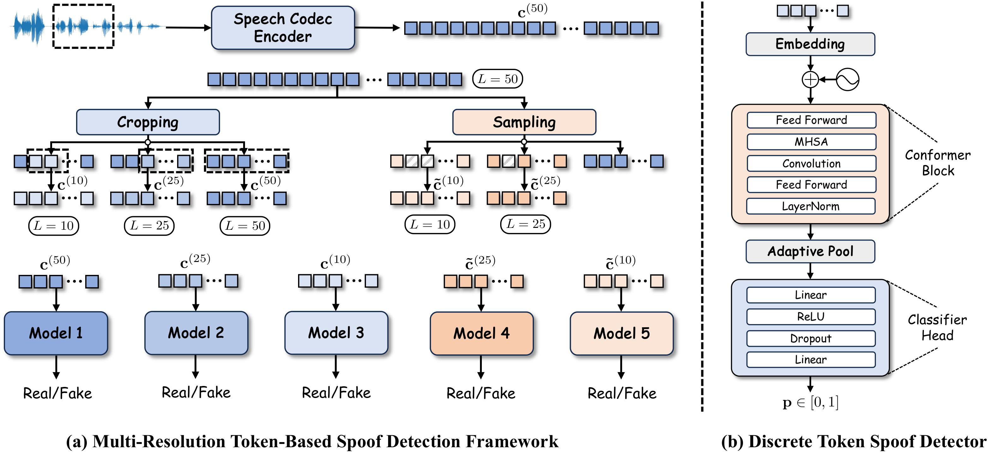
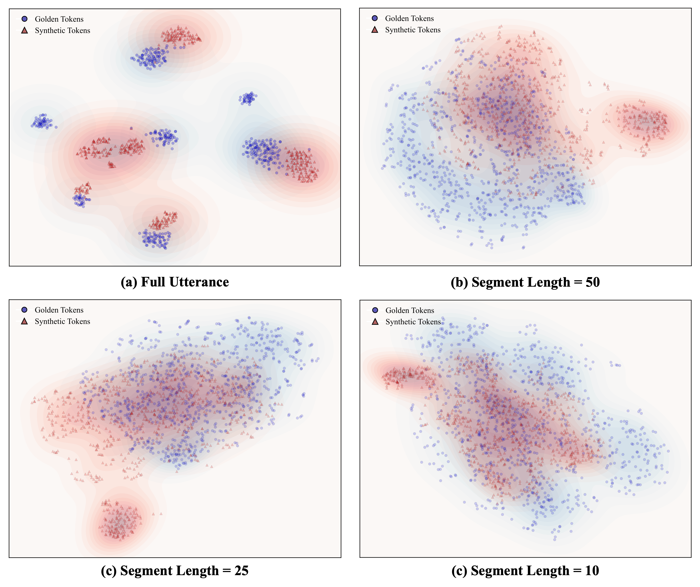

MSpoofTTS:
Hierarchical Decoding for Discrete Speech Synthesis with Multi-Resolution Spoof Detection
Overview
Neural codec language models enable high-quality discrete speech synthesis, yet their inference remains vulnerable to token-level artifacts and distributional drift that degrade perceptual realism. Rather than relying on preference optimization or retraining, we propose MSpoof-TTS, a training-free inference framework that improves zero-shot synthesis through multi-resolution spoof guidance. We introduce a Multi-Resolution Token-based Spoof Detection framework that evaluates codec sequences at different temporal granularities to detect locally inconsistent or unnatural patterns. We then integrate the spoof detectors into a hierarchical decoding strategy, progressively pruning low-quality candidates and re-ranking hypotheses. This discriminator-guided generation enhances robustness without modifying model parameters. Experiments validate the effectiveness of our framework for robust and high-quality codec-based speech generation.

Figure 1. Overview of multi-resolution token-based spoof detection framework. (a) Construction of token sequences at multiple temporal resolutions for training separate real/fake detectors. (b) Conformer-based discrete token spoof detector architecture.

Figure 2. T-SNE visualization of embedding distributions under different segment lenths.
Generated Speech Samples on LibriTTS
| Text | EAS | RAS | HierEAS | HierRAS |
|---|---|---|---|---|
| It is said that his right arm had grown powerless from having been raised so often over the heads of those whom he baptized. He wished then to go to China to win still more souls for God but he died of fever on the island of Sancian. | ||||
| Mr Soames was a tall, spare man, of a nervous and excitable temperament. | ||||
| She had pictured herself earning this by teaching one or two of her specialties in some private school near New York or Boston, or even in a Western college. |
Generated Speech Samples on LibriSpeech
| Text | EAS | RAS | HierEAS | HierRAS |
|---|---|---|---|---|
| He began a confused complaint against the wizard, who had vanished behind the curtain on the left. | ||||
| I remained there alone for many hours, but I must acknowledge that before I left the chambers I had gradually brought myself to look at the matter in another light. | ||||
| Then he rushed down the stairs into the courtyard, shouting loudly for his soldiers and threatening to punish everybody in his dominions if the sailorman was not recaptured. |